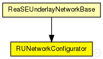
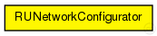

This documentation is released under the Creative Commons license
This documentation is released under the Creative Commons licenseThis simple module is responsible for configuration of the simulated topology, i.e. assignment of IP addresses to all nodes of the topology. Furthermore, routing tables have to be filled and default routing paths must be created. Routing is separated into Intra-AS and Inter-AS routing.
The following diagram shows usage relationships between types. Unresolved types are missing from the diagram. Click here to see the full picture.
The following diagram shows inheritance relationships for this type. Unresolved types are missing from the diagram. Click here to see the full picture.
If a module type shows up more than once, that means it has been defined in more than one NED file.
| ReaSEUnderlayNetworkBase (compound module) |
The InetUnderlay ned-file See also: ReaSEUnderlayConfigurator |
| Name | Value | Description |
|---|---|---|
| display | i=block/network2 |
// // This simple module is responsible for configuration of the simulated // topology, i.e. assignment of IP addresses to all nodes of the topology. // Furthermore, routing tables have to be filled and default routing // paths must be created. // Routing is separated into Intra-AS and Inter-AS routing. // simple RUNetworkConfigurator { parameters: @display("i=block/network2"); }
This documentation is released under the Creative Commons license